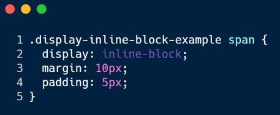

Mi az a inline-block?
Az inline-block egy olyan megjelenítési mód, ami az inline és a block elemek tulajdonságait ötvözi. Az inline-block elemek nem kezdenek új sort, hanem egy sorban helyezkednek el egymás mellett.
Az inline blokk szerkeszthető is, ami azt jelenti, hogy lehet példáúl a szélességét és a magasságát változtatni CSS-en belül
Példa
Div 1
Div 2